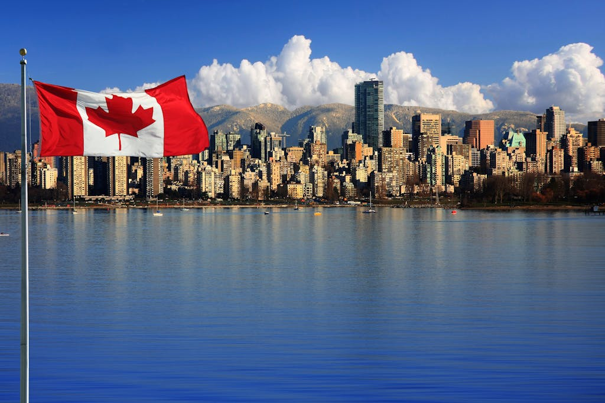
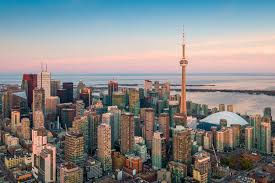

O Canadá é um país localizado na América do Norte e é conhecido por sua grande extensão territorial, suas belas paisagens naturais e sua alta qualidade de vida. Possui uma grande diversidade cultural, resultado da convivência de povos de diferentes origens, além de dois idiomas oficiais: inglês e francês. O país é famoso por suas florestas, montanhas, lagos e pela preservação do meio ambiente. Sua economia é uma das mais desenvolvidas do mundo, destacando-se nos setores de tecnologia, mineração, agricultura e serviços. A capital é Ottawa, enquanto cidades como Toronto, Vancouver e Montreal estão entre as mais importantes do país.
Saiba mais sobre o Canada
Toronto é a maior cidade do Canadá e um dos centros urbanos mais multiculturais do mundo. Localizada às margens do Lago Ontário, a cidade combina modernidade, diversidade cultural e qualidade de vida. Entre seus principais símbolos está a CN Tower, uma das torres mais altas do planeta, que oferece uma vista panorâmica impressionante da região. Toronto também se destaca por sua cena artística, gastronômica e econômica. A cidade abriga importantes museus, teatros e festivais internacionais, além de ser um grande polo financeiro e tecnológico da América do Norte. Com bairros cheios de personalidade e pessoas de diferentes origens, Toronto é conhecida por seu ambiente acolhedor e vibrante.
Saiba mais sobre TorontoMontreal é uma das maiores e mais importantes cidades do Canadá, localizada na província de Quebec. Conhecida por sua rica história, diversidade cultural e forte influência da cultura francesa, a cidade combina arquitetura histórica com áreas modernas e desenvolvidas. Montreal é um importante centro econômico, educacional e turístico, abrigando universidades renomadas, museus, festivais e eventos internacionais. Além disso, a cidade se destaca por sua gastronomia variada, seus parques e pela qualidade de vida oferecida aos moradores, atraindo visitantes de diversas partes do mundo.
Saiba mais sobre Montreal